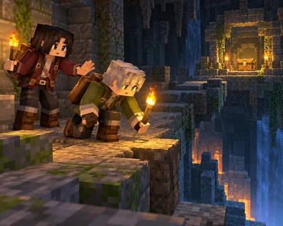

地下与宝藏 难度 · 挑战 约 97 词
The Chest Can Wait
宝箱就在前面，然后呢？

这篇讲什么
麦克斯看到黑暗通道另一头有一个箱子，想直接跑过去。
核心词:Treasure Chest —— 在画面里找到它,再把单词念出来。
Max sees a chest beyond a dark passage and wants to run straight toward it.
游戏里会用到的一句,读两遍再抄一次。
地下与宝藏 难度 · 挑战 约 97 词
宝箱就在前面，然后呢？

麦克斯看到黑暗通道另一头有一个箱子，想直接跑过去。
核心词:Treasure Chest —— 在画面里找到它,再把单词念出来。
Max sees a chest beyond a dark passage and wants to run straight toward it.
游戏里会用到的一句,读两遍再抄一次。